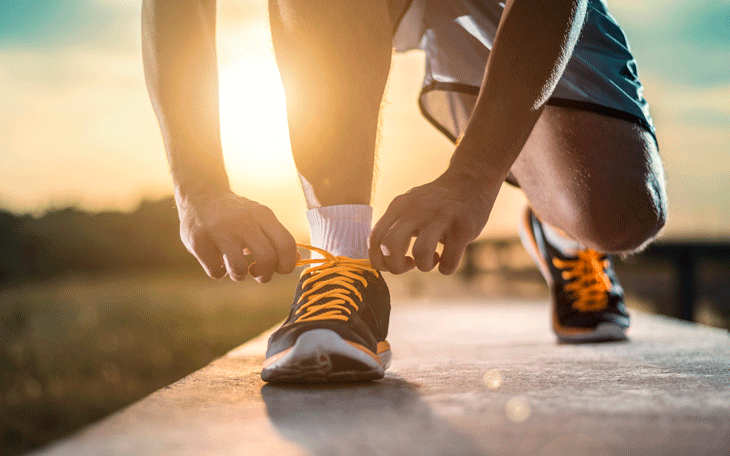

1. Exercício Físico
Breve introdução...
Segundo a Organização Mundial de Saúde (OMS), o conceito de "saúde", mais do que ausência de doenças, representa uma situação de completo bem-estar físico, psíquico e social.
A atividade física é muitas vezes associada corretamente à saúde uma vez que apresenta comprovados benefícios nas áreas mencionadas.
De lembrar que durante a pandemia, a atividade física, foi crucial na manutenção da saúde e bem-estar, quer físico quer mental.
1.1. Atividade física - quantidade e intensidade
Segundo a OMS, devemos praticar pelo menos, 150 minutos semanais de atividades físicas leves a moderadas que incluem, por exemplo, caminhadas ou andar de bicicleta (ou qualquer outro exercício que não exceda 70% da função cardíaca máxima).
Recomenda-se ainda 75 minutos semanais de atividade física intensa como correr, nadar (sprints), CrossFit, entre outros.
Percebemos que isto corresponde a cerca de 30 minutos de exercício físico diário (20 min. exercício leve a moderado e 10 min. exercício intenso) o que estará claramente ao alcance de todos, uma vez que a maior parte dessa atividade física leve ou moderada é feita insconcientemente nas nossas rotinas diárias.
Resumindo, basta estar ativo e um pouco de esforço para cumprir as metas da OMS.
2. Benefícios do exercício físico
Por muito que se fale que a atividade física é essencial a vários níveis, muitas vezes é difícil de perceber efetivamente quais os seus benefícios para além dos comuns, manter a forma, perder ou manter o peso... Assim sendo, alguns dos seus benefícios, alguns menos evidentes, são os seguintes:
- • Aumenta a qualidade do sono;
- • Ajuda a controlar o peso corporal;
- • Melhora o desempenho cognitivo;
- • Ajuda a reduzir o stress e a aumentar a disposição e sensação de bem estar;
- • Beneficia o convívio e a sociabilidade.
- • Reduz os riscos de desenvolvimento de doenças cardiovasculares, como enfarte, AVC e hipertensão arterial;
- • Regula as proporções do colestrol LDL (colestol mau) e HDL (colestrol bom);
- • Reduz o risco de desenvolver diabetes e controla a taxa de glicose no sangue;
- • Está associdado a uma menor chance de desenvolver alguns tipos de cancro, principalmente se associado a uma boa alimentação;
- • Ajuda a combater a depressão, ansiedade, e outros problemas relacionados com transtornos psicossociais.
3. Desporto
Porque ser desportista é essencial...
Todos os objetivos mencionados são mera referência. Muitos de nós preferem um desporto que nos permita estar ativos e atingir metas, individuais e/ou coletivas.
Uma modalidade desportiva é o modo mais fácil de nos manter-mos em forma uma vez que estimula vários grupos musculares e potencia as nossas capacidades em diversas áreas. Além disso, é uma excelente forma de conviver e aumentar a nossa autoestima num processo em que nos autopropomos sucessivemente a certas metas que nos melhoram, fisicamente, mentalmente e socialmente.
3.1. Qual o melhor desporto?
É certo que qualquer praticante irá defender que a sua modalidade é naturalmente a melhor. Outros dirão que, por exemplo, a natação é factualmente o desporto mais completo.
No entanto, nenhuma destas respostas está necessariamente certa. O melhor desporto ou atividade física é a que se faz e se gosta de fazer! O importante é estarmos ativos e sermos felizes fazendo esse desporto ou atividade física.